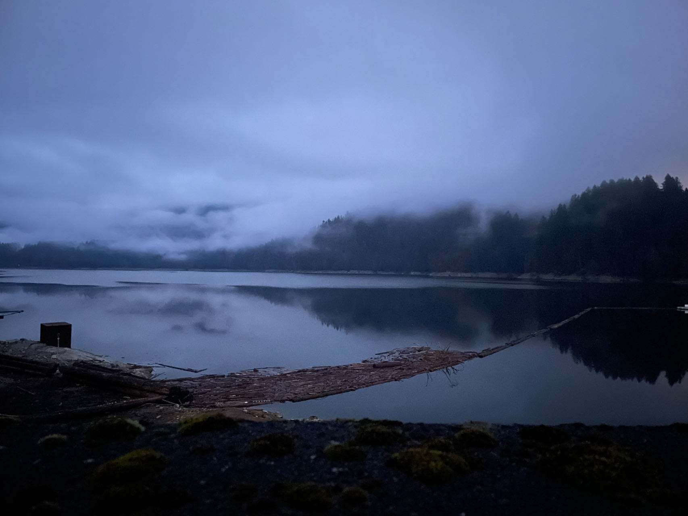
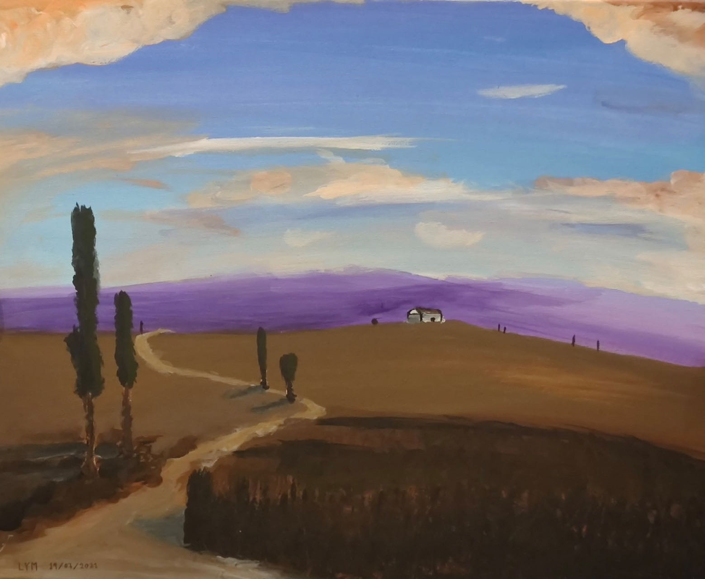
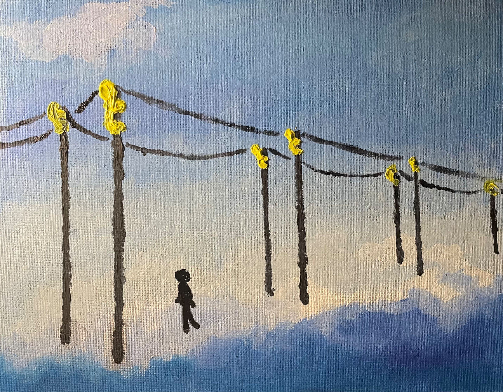

Soochow University, where I was fortunate to attend the
Suzhou workshop on Matroid Theory
in 2024. Interestingly, in the first two talks, the word 'matroid' didn't even appear...

Somewhere on earth...

A naive painting of mine...

Another naive painting...
which I dedicated to Uncle Mei's family, in gratitude for their hospitality and all their warmth and care.